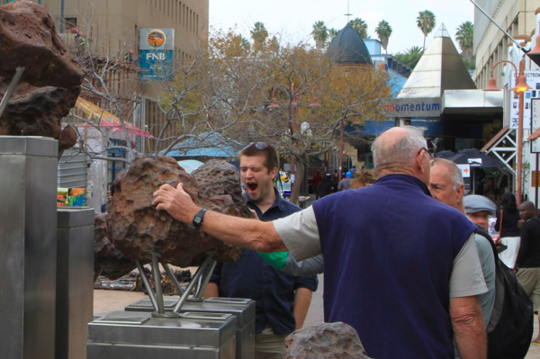

Windhoek

After a quick stop at the Parliament, and an unsuccessful attempt to visit the Christkirche we visited the meteorite monument in downtown Windhoek. Evidently Ethan was getting a little tired of site seeing by this time and needed a break for lunch. Which we took at Schneider. Jane had some delicious Curry Wurst, and Josh, Josh, and I all went for the Stroghanoff with Spaetzel. Schneider had some nice outdoor seating, and was surprisingly fast and cheap for a center city lunch stop.
After lunch was the well timed trip to the 'Diamond Factory' We learned a little about diamonds, and then had a tour of the showroom. The tour began with some free glasses of Champagne and ended at the Tanzanite stand. Long time readers of this blog may remember the Tanzanite story from Mexico and how that ended. This was had a somewhat similar, though less expensive, ending to the story. It seems fitting to get some Tanzanite while we're in Africa,especially since our 26th anniversary is only 2 days away.
Comments